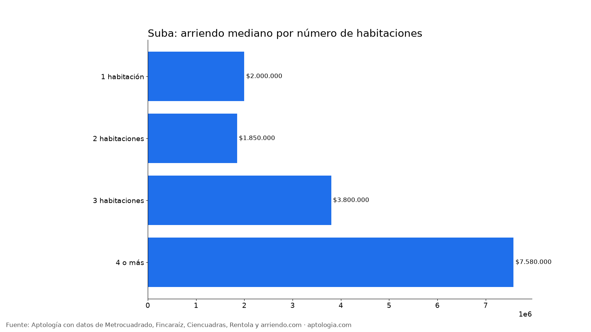
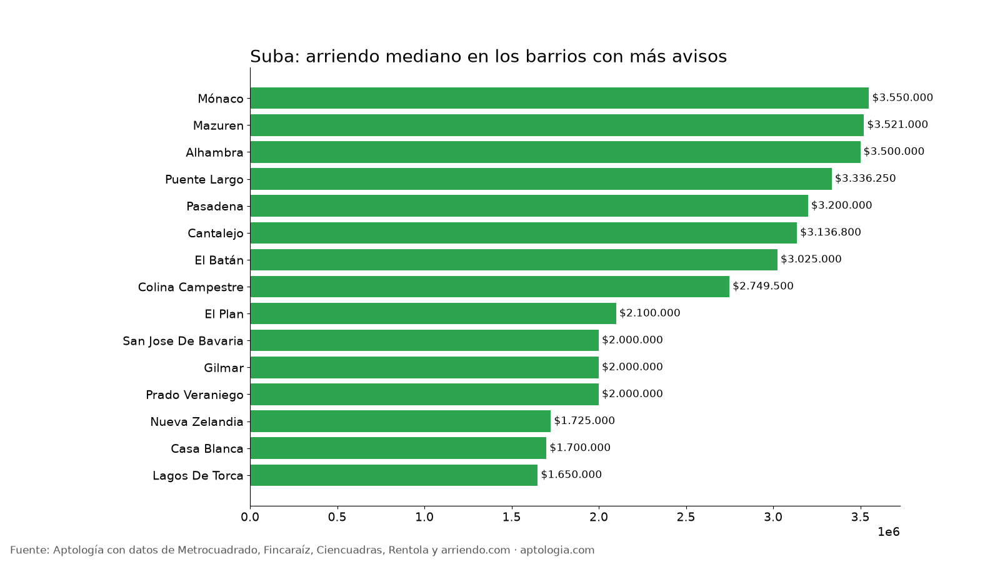

Arriendo en Suba, Bogotá: precios por habitaciones, estrato y barrio (octubre 2026)
Estudio con datos abiertos (CC BY 4.0). Versión original: https://www.aptologia.com/estudios/arriendo-en-suba-bogota-2026 · DOI: 10.5281/zenodo.23349046
El arriendo mediano de un apartamento o apartaestudio en Suba (Bogotá) es de $2.307.000 al mes, unos $44.235 por m². Un 2 habitaciones cuesta en la mediana $1.850.000. El barrio más barato con 5 avisos o más es Rincón De Santa Ines ($1.300.000) y el más caro Suba Naranjos ($11.100.000).
Resumen: analizamos 917 apartamentos y apartaestudios en arriendo únicos en la localidad de Suba.
Actualizado: 13 de octubre de 2026 · Próxima actualización: mensual.

Resumen
| Indicador | Valor |
|---|---|
| Canon mediano | $2.307.000 |
| Por m² (mediana) | $44.235/m² |
| Área mediana | 54 m² |
| Con parqueadero | 54,1 % |
| Administración mediana | $390.000 (13,7 % del canon) |
| Avisos únicos | 917 |
Por número de habitaciones
| Habitaciones | Canon mediano | Por m² | Área mediana | Avisos |
|---|---|---|---|---|
| 1 habitación | $2.000.000 | $54.545/m² | 37 m² | 147 |
| 2 habitaciones | $1.850.000 | $41.784/m² | 45 m² | 361 |
| 3 habitaciones | $3.800.000 | $41.379/m² | 90 m² | 303 |
| 4 o más | $7.580.000 | $38.835/m² | 185 m² | 41 |
Por estrato
| Estrato | Canon mediano | Por m² | Avisos |
|---|---|---|---|
| 2 | $1.300.000 | $27.857/m² | 28 |
| 3 | $1.650.000 | $37.083/m² | 245 |
| 4 | $2.250.000 | $47.436/m² | 353 |
| 5 | $3.800.000 | $48.173/m² | 232 |
| 6 | $9.047.540 | $44.917/m² | 54 |
Barrios más baratos y más caros

Más baratos:
| Barrio | Canon mediano | Por m² | Avisos |
|---|---|---|---|
| Rincón De Santa Ines | $1.300.000 | $30.000 | 5 |
| Tuna Baja | $1.500.000 | $39.583 | 5 |
| Conejera | $1.550.000 | $35.227 | 5 |
| Suba | $1.600.000 | $41.026 | 11 |
| Guaymaral | $1.639.430 | $37.500 | 11 |
Más caros:
| Barrio | Canon mediano | Por m² | Avisos |
|---|---|---|---|
| Suba Naranjos | $11.100.000 | $42.852 | 6 |
| Los Naranjos | $9.000.000 | $26.672 | 5 |
| Ilarco | $8.080.000 | $44.975 | 5 |
| Niza Suba | $6.125.000 | $45.742 | 8 |
| Casa Blanca Suba | $4.935.000 | $45.734 | 6 |
Apartaestudio o apartamento de 1 habitación
En Suba, un apartaestudio cuesta en la mediana $1.850.000 (65 avisos) y un apartamento de 1 habitación $2.000.000 (147 avisos): $150.000 de diferencia.
Cómo usarlo para decidir: compara tu presupuesto con la mediana de tu número de habitaciones y mira los barrios más baratos de la tabla; suma la administración (mediana $390.000) para saber el costo real mensual.
Preguntas frecuentes
¿Cuánto cuesta arrendar un apartamento en Suba? La mediana es $2.307.000 al mes, con 917 avisos únicos al 13 de octubre de 2026.
¿Cuánto vale un apartamento de 2 habitaciones en arriendo en Suba? La mediana es $1.850.000 al mes (361 avisos).
¿Cuál es el barrio más barato para arrendar en Suba? Entre los barrios con 5 avisos o más, Rincón De Santa Ines, con un canon mediano de $1.300.000. El más caro es Suba Naranjos, con $11.100.000.
¿Cuánto se paga de administración en Suba? La mediana es $390.000 al mes, alrededor del 13,7 % del canon.
¿Qué porcentaje de apartamentos en arriendo en Suba tiene parqueadero? El 54,1 % de los avisos que informan el dato incluye al menos un parqueadero.
Metodología
- Fuente: base de ingesta diaria de Aptología, con avisos públicos de Metrocuadrado, Fincaraíz, Ciencuadras, Rentola y arriendo.com. Corte al 13 de octubre de 2026.
- Filtros: apartamentos y apartaestudios en avisos vivos que pasan el control de calidad, en la localidad de Suba, canon entre $400.000 y $30.000.000. Se excluyen TikTok y Facebook Marketplace.
- Duplicados: se deja un aviso por grupo de duplicados (el mismo inmueble en varios portales).
- Barrios: solo barrios con 5 avisos o más. Parqueadero y administración, sobre los avisos que informan el dato.
- Limitaciones: son precios pedidos, no cerrados. Los barrios y localidades vienen tal como los escribe cada portal.
- Datos abiertos: datos.csv, licencia CC BY 4.0.
Cómo citar
Pinzón Pineda, D. M. (2026). Arriendo en Suba, Bogotá: precios por habitaciones, estrato y barrio (octubre 2026). Aptología. https://www.aptologia.com/estudios/arriendo-en-suba-bogota-2026. Datos: datos.csv, licencia CC BY 4.0.